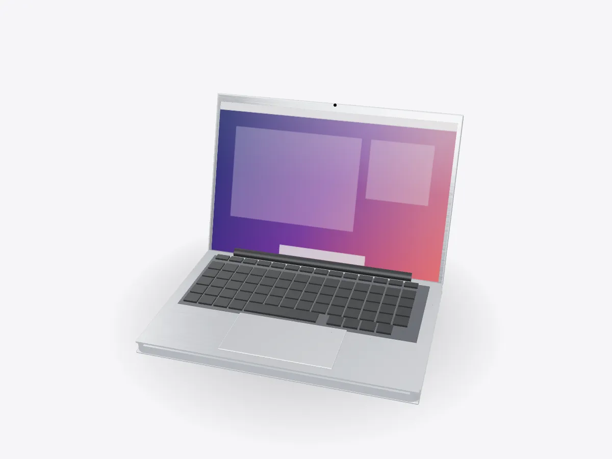

01 / 05
Overview
13 parts, one idea.
Take a laptop apart in 3D: battery cells, logic board, processor, heat pipe and fan, keyboard, trackpad, hinge and display. Open the lid and peel each layer.
Drag to orbit, pinch or scroll to zoom, tap any part.
How it works · Tech
Under the keyboard sits a whole computer, a battery that fills half the case and a cooling system thinner than a pencil. Open the lid and look inside.

Scores are saved on this device only.
01 / 05
Overview
Take a laptop apart in 3D: battery cells, logic board, processor, heat pipe and fan, keyboard, trackpad, hinge and display. Open the lid and peel each layer.
Drag to orbit, pinch or scroll to zoom, tap any part.
02 / 05
Explode
Keep scrolling and every part slides away from the centre, so you can see how they fit together.
03 / 05
Slice
A section plane sweeps through the model as you scroll. Pick an axis and set the depth yourself.
04 / 05
Parts
Pick a part or tap a glowing dot. It lights up and everything else fades back.
05 / 05
Facts
Boiling and condensing a liquid moves heat far better than solid copper.
Battery cells take up about half the space inside a thin laptop.
The hinge uses friction to hold the screen at any angle.
Explained
A modern thin laptop is mostly battery. Flat lithium-ion cells fill the bottom of the case, and the logic board, processor and cooling system are squeezed into a strip near the hinge. On top sits the top case with the keyboard and trackpad, and the display lives in the lid. The model here is generic and unbranded, but the layout is common across thin laptops.
The logic board joins everything together. The processor sits in the middle, with memory either on the same package or beside it on the board. Storage is soldered flash memory or a removable SSD. Ports, speakers and the keyboard all connect to the board with flat flex cables.
The processor turns electrical power into heat, and it has to lose that heat to keep running fast. A copper heat pipe is pressed against the chip. Inside the sealed pipe a small amount of liquid soaks a wick. At the hot end the liquid boils, the vapour rushes to the cooler end and condenses, and the liquid creeps back through the wick. This cycle moves heat far better than a solid copper bar of the same size.
At the far end of the pipe are thin metal fins and a blower fan that pushes air through them and out of the vents. Some very thin laptops have no fan at all and spread the heat into the case instead. They stay silent but slow down sooner under heavy work.
Each key press closes a circuit in a grid of rows and columns, and a controller scans the grid many times a second to see which keys are down. The trackpad is a capacitive sensor under a glass surface. Some trackpads do not physically click at all: a haptic motor taps the glass so it feels like a click.
The hinge is a friction hinge. It is stiff enough to hold the screen still while you type but light enough to open with one finger. Cables for the display and the antennas run through it. Open Play to swing the lid open and closed, then look inside, or remove each layer in turn.
D3DDD
D3DDD makes them: product cutaways, exploded views, architectural renders and technical drawings.